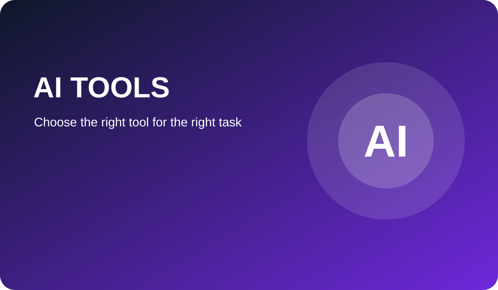
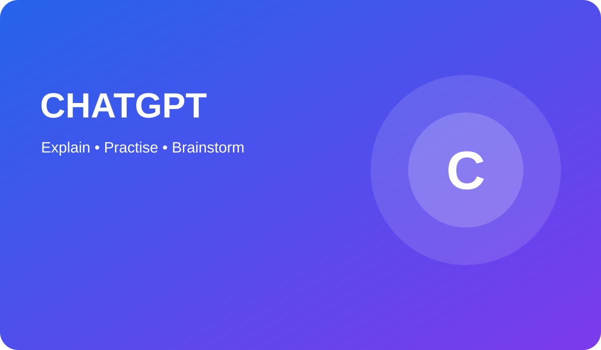
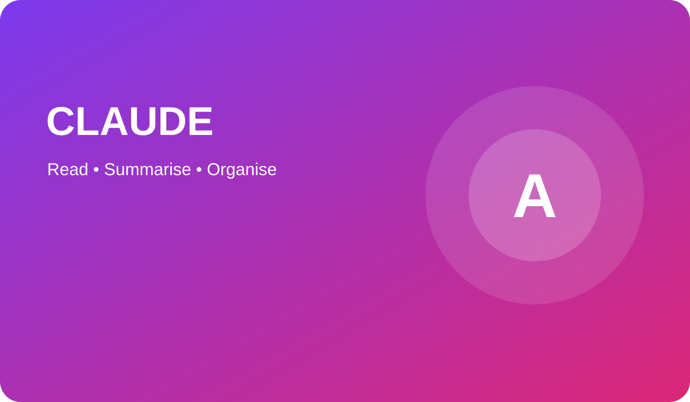
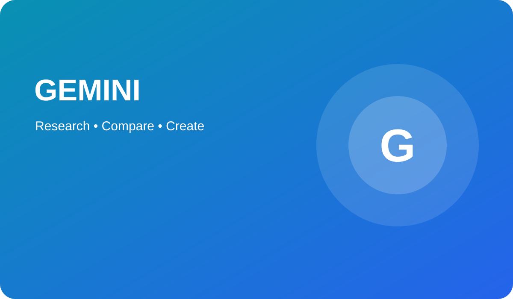
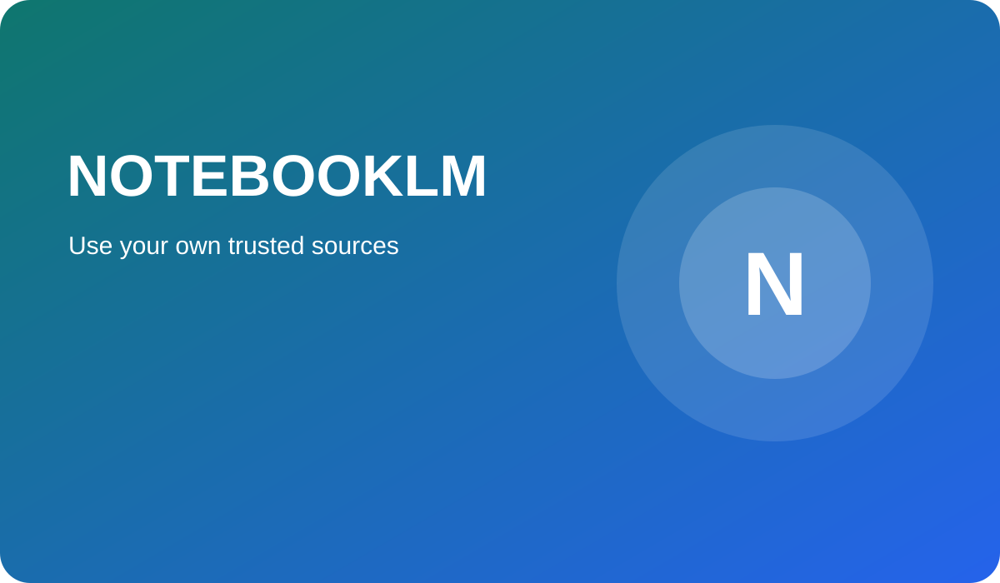
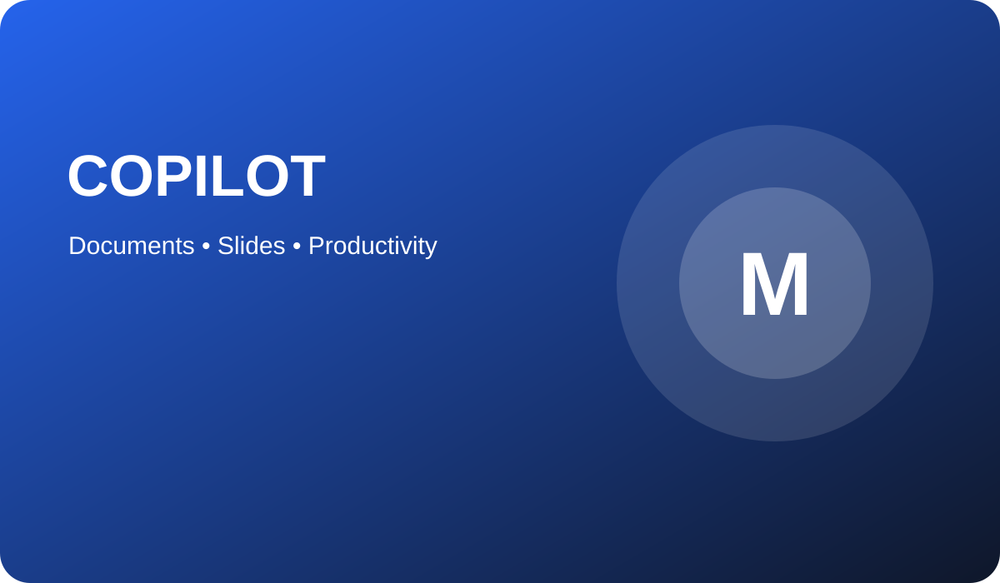
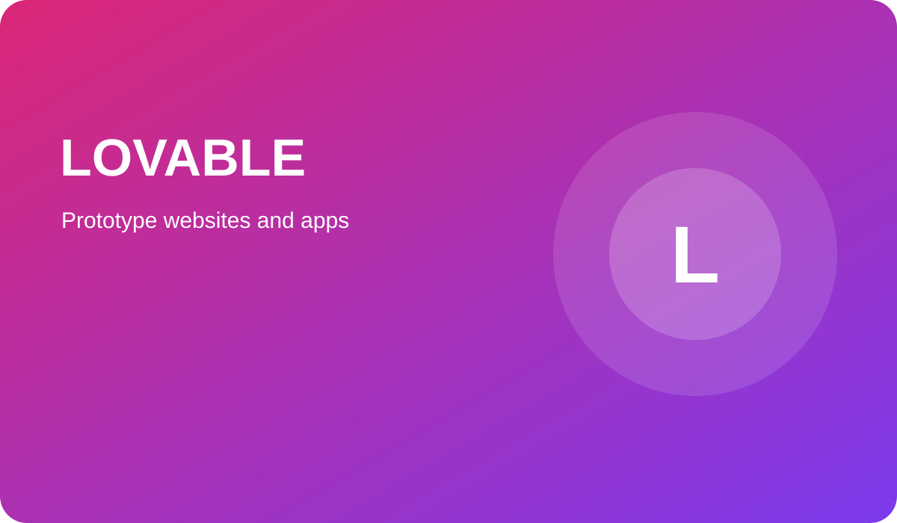

Meet Today’s Most Popular AI Tools
Learn what each tool does, when to use it, how to write useful prompts, and how to recognise its limitations.

Choosing the Right AI Tool
No single AI tool is best at everything. Some are strong at explaining ideas, while others are better at organising documents, supporting research, creating presentations or producing website prototypes.
The best choice depends on your task. You should also consider privacy, accuracy, school rules and whether the tool is suitable for your age.
Learning Goals
- Explain the purpose of six popular AI tools.
- Choose the most suitable tool for a task.
- Write clearer prompts.
- Recognise strengths and limitations.
- Use AI safely and honestly.
Jump to an AI Tool

CREATED BY OPENAI
ChatGPT
ChatGPT is a conversational AI assistant. You type a question or instruction in everyday language and it produces a response. It can explain difficult topics, create practice questions, help plan writing and support coding.
Best for
- Explaining difficult concepts
- Generating quizzes
- Brainstorming ideas
- Planning writing
- Basic coding support
Strengths
- Easy to use
- Clear conversational responses
- Useful across many subjects
- Can adapt explanations to different ages
Example prompt
CREATED BY ANTHROPIC
Claude
Claude is an AI assistant designed for conversation, writing and working with longer pieces of information. It can help organise notes, identify themes and create clear summaries.
Best for
- Long documents
- Summarising notes
- Comparing arguments
- Improving report structure
Strengths
- Clear structured writing
- Good at identifying key ideas
- Useful for planning reports
- Can simplify complex text
Example prompt


CREATED BY GOOGLE
Gemini
Gemini is Google’s AI assistant. It can help users compare ideas, generate explanations, support research and work with content across Google’s wider ecosystem.
Best for
- Comparing information
- Research planning
- Generating ideas
- Google-based productivity
Strengths
- Useful for comparisons
- Can organise answers into tables
- Supports text and image-based tasks
- Works well with Google services
Example prompt
CREATED BY GOOGLE
NotebookLM
NotebookLM helps users work with sources they choose. Instead of relying only on general knowledge, it can answer questions and create summaries based on documents added to a notebook.
Best for
- Revision from class notes
- Source-based summaries
- Generating practice questions
- Finding connections between documents
Strengths
- Stays focused on selected sources
- Useful for organised revision
- Can create question prompts
- Helps compare different notes
Example workflow


CREATED BY MICROSOFT
Microsoft Copilot
Microsoft Copilot is an AI assistant connected to Microsoft products and services. Depending on the version available, it can support writing, presentations, spreadsheets, email and general productivity.
Best for
- Presentation outlines
- Document planning
- Summarising information
- Spreadsheet ideas
- Drafting emails
Strengths
- Fits familiar Microsoft tools
- Useful for productivity
- Can structure information quickly
- Helpful for first drafts
Example prompt
CREATED BY LOVABLE
Lovable
Lovable is an AI-assisted development platform that can turn written instructions into an early website or application prototype. It is useful for testing ideas quickly before creating a polished final product.
Best for
- Website prototypes
- App ideas
- Testing page layouts
- Generating starter code
- Exploring user interfaces
Strengths
- Quick visual results
- Useful for beginners
- Helps turn ideas into prototypes
- Supports design experimentation
Example prompt

AI Tools Comparison
| Tool | Created by | Best for | Ease of use | Main strength | Important limitation |
|---|---|---|---|---|---|
| ChatGPT | OpenAI | Explanations and practice | Easy | Flexible conversation | Can invent facts |
| Claude | Anthropic | Long documents | Easy | Clear structured summaries | May miss key detail |
| Gemini | Research and comparison | Easy | Useful comparison and productivity | Claims still need checking | |
| NotebookLM | Revision from sources | Medium | Focused on user-provided documents | Depends on source quality | |
| Copilot | Microsoft | Office productivity | Medium | Useful in documents and presentations | Outputs can be generic |
| Lovable | Lovable | Website and app prototypes | Medium | Fast visual prototyping | Requires testing and refinement |
Which AI Tool Should I Choose?
Homework explanations
Choose ChatGPT for simple explanations and practice questions.
Long reading
Choose Claude to organise and summarise longer passages.
Research comparison
Choose Gemini to compare ideas and organise findings.
Revision notes
Choose NotebookLM when working with your own trusted documents.
Presentations
Choose Copilot to plan documents or slide outlines.
Website ideas
Choose Lovable to create and test an early prototype.
Prompt Writing Academy
Weak prompt
“Tell me about volcanoes.”
This is too broad and gives little guidance.
Better prompt
“Explain volcanoes to a Year 8 student using simple language.”
This identifies the audience and style.
Strong prompt
“Explain volcanoes to a Year 8 student using simple language, one real-world example and five quiz questions.”
This clearly describes the required output.
AI Myths and Facts
Myth
AI is always correct.
Fact
AI can produce inaccurate or invented information.
Myth
AI removes the need to learn.
Fact
AI is most useful when it supports your own understanding.
Myth
One AI tool is best for every task.
Fact
Different tools have different strengths and limitations.
AI Challenge Zone
Explain
Ask an AI tool to explain fractions using pizza. Improve the prompt until the answer is clear.
Compare
Ask two AI tools the same question. Identify similarities, differences and possible errors.
Create
Write a prompt for a three-page school club website. Sketch your own layout before using any AI tool.
Responsible AI Checklist
Check facts
Confirm important information using reliable sources.
Protect privacy
Do not upload passwords, addresses or confidential documents.
Use your own thinking
AI should support your work rather than complete all thinking for you.
Follow school rules
Use AI only in ways allowed by your teacher or school.
Respect copyright
Do not copy protected text or images without permission.
Be transparent
Acknowledge AI support when your teacher or task requires it.